Capítulo 18 Diagnóstico de modelos
“Tus suposiciones son tus ventanas al mundo. Frótelas de vez en cuando o la luz no entrará.”
— Isaac Asimov
Después de leer este capítulo, podrá:
- Comprender los supuestos de un modelo de regresión.
- Evaluar los supuestos del modelo de regresión mediante visualizaciones y pruebas.
- Comprender el apalancamiento, los valores atípicos y los puntos influyentes.
- Ser capaz de identificar observaciones inusuales en modelos de regresión.
18.1 Supuestos del modelo
Recuerde el modelo de regresión lineal múltiple que hemos definido.
\[ Y_i = \beta_0 + \beta_1 x_{i1} + \beta_2 x_{i2} + \cdots + \beta_{p-1} x_{i(p-1)} + \epsilon_i, \qquad i = 1, 2, \ldots, n. \]
Usando notación matricial, este modelo se puede escribir mucho más resumido como
\[ Y = X \beta + \epsilon. \]
Dados los datos, encontramos las estimaciones para los parámetros \(\beta\) usando
\[ \hat{\beta} = \left( X^\top X \right)^{-1}X^\top y. \]
Luego, notamos que estas estimaciones tenían una media
\[ \text{E}[\hat{\beta}] = \beta, \]
y varianza
\[ \text{Var}[\hat{\beta}] = \sigma^2 \left( X^\top X \right)^{-1}. \]
En particular, un parámetro individual, digamos \(\hat{\beta}_j\) tenía una distribución normal
\[ \hat{\beta}_j \sim N\left(\beta_j, \sigma^2 C_{jj} \right) \]
donde \(C\) fue la matriz definida como
\[ C = \left(X^\top X\right)^{-1}. \]
Luego usamos este hecho para definir
\[ \frac{\hat{\beta}_j - \beta_j}{s_e \sqrt{C_{jj}}} \sim t_{n-p}, \]
que usamos para realizar pruebas de hipótesis.
Hasta ahora hemos analizado varias métricas como RMSE, RSE y \(R^2\) para determinar qué tan bien nuestro modelo se ajusta a nuestros datos. Cada uno de estos de alguna manera considera la expresión
\[ \sum_{i = 1}^n (y_i - \hat{y}_i)^2. \]
Entonces, esencialmente cada uno de estos mira qué tan cerca están los puntos de datos del modelo. Sin embargo, ¿eso es todo lo que nos importa?
- Puede ser que los errores se cometan de forma sistemática, lo que significa que nuestro modelo está mal especificado. Es posible que necesitemos términos de interacción adicionales o términos polinomiales que veremos más adelante.
- También es posible que en un conjunto particular de valores predictores, los errores sean muy pequeños, pero en un conjunto diferente de valores predictores, los errores sean grandes.
- Quizás la mayoría de los errores sean muy pequeños, pero algunos son muy grandes. Esto sugeriría que los errores no siguen una distribución normal.
¿Son estos temas los que nos preocupan? Si todo lo que quisiéramos hacer es predecir, posiblemente no, ya que solo nos preocuparíamos por el tamaño de nuestros errores. Sin embargo, si nos gustaría realizar inferencias, por ejemplo, para determinar si un predictor en particular es importante, nos importa mucho. Todos los resultados distributivos, como una prueba \(t\) para un solo predictor, se derivan de los supuestos de nuestro modelo.
Técnicamente, los supuestos del modelo se codifican directamente en una declaración del modelo como,
\[ Y_i = \beta_0 + \beta_1 x_{i1} + \beta_2 x_{i2} + \cdots + \beta_{p-1} x_{i(p-1)} + \epsilon_i \]
donde \(\epsilon_i \sim N(0, \sigma^2).\)
A menudo, los supuestos de regresión lineal, se expresan como,
- Linealidad: la respuesta se puede escribir como una combinación lineal de los predictores. (Con ruido sobre esta verdadera relación lineal).
- Independencia: los errores son independientes.
- Normalidad: la distribución de los errores debe seguir una distribución normal.
- Igualdad de varianza: la varianza del error es la misma en cualquier conjunto de valores predictores.
El supuesto de linealidad se codifica como
\[ \beta_0 + \beta_1 x_{i1} + \beta_2 x_{i2} + \cdots + \beta_{p-1} x_{i(p-1)}, \]
mientras que los tres restantes, están codificados en
\[ \epsilon_i \sim N(0, \sigma^2), \]
ya que \(\epsilon_i\) son \(iid\) variables aleatorias normales con varianza constante.
Si se cumplen estas suposiciones, ¡genial! Podemos realizar inferencia, y es válido. Si estas suposiciones no se cumplen, aún podemos “realizar” una prueba \(t\) usando R, pero los resultados no son válidos. Las distribuciones de las estimaciones de los parámetros no serán las esperadas. Las pruebas de hipótesis aceptarán o rechazarán incorrectamente. Básicamente, basura entra, basura sale.
18.2 Comprobación de supuestos
Ahora veremos una serie de herramientas para verificar los supuestos de un modelo lineal. Para probar estas herramientas, usaremos datos simulados de tres modelos:
\[ \text{Modelo 1:} \quad Y = 3 + 5x + \epsilon, \quad \epsilon \sim N(0, 1) \]
\[ \text{Modelo 2:} \quad Y = 3 + 5x + \epsilon, \quad \epsilon \sim N(0, x^2) \]
\[ \text{Modelo 3:} \quad Y = 3 + 5x^2 + \epsilon, \quad \epsilon \sim N(0, 25) \]
sim_1 = function(sample_size = 500) {
x = runif(n = sample_size) * 5
y = 3 + 5 * x + rnorm(n = sample_size, mean = 0, sd = 1)
data.frame(x, y)
}
sim_2 = function(sample_size = 500) {
x = runif(n = sample_size) * 5
y = 3 + 5 * x + rnorm(n = sample_size, mean = 0, sd = x)
data.frame(x, y)
}
sim_3 = function(sample_size = 500) {
x = runif(n = sample_size) * 5
y = 3 + 5 * x ^ 2 + rnorm(n = sample_size, mean = 0, sd = 5)
data.frame(x, y)
}18.2.1 Gráfica de ajustados versus residuos
Probablemente nuestra herramienta más útil sea una Gráfica de ajustados versus residuales. Será útil para verificar los supuestos de linealidad y varianza constante.
Los datos generados a partir del Modelo 1 no deberían mostrar ningún signo de infracción de los supuestos, por lo que usaremos esto para ver cómo debería verse una buena gráfica de ajustados versus residuales. Primero, simularemos observaciones de este modelo.
set.seed(42)
sim_data_1 = sim_1()
head(sim_data_1)## x y
## 1 4.574030 24.773995
## 2 4.685377 26.475936
## 3 1.430698 8.954993
## 4 4.152238 23.951210
## 5 3.208728 20.341344
## 6 2.595480 14.943525Luego ajustamos el modelo y agregamos la línea ajustada a un diagrama de dispersión.
plot(y ~ x, data = sim_data_1, col = "grey", pch = 20,
main = "Datos del modelo 1")
fit_1 = lm(y ~ x, data = sim_data_1)
abline(fit_1, col = "darkorange", lwd = 3)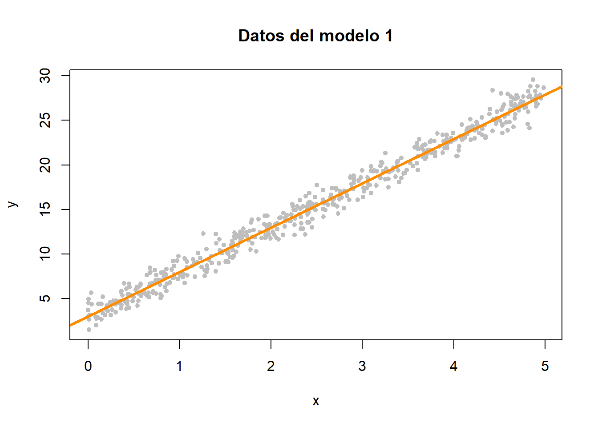
Ahora trazamos un gráfico de ajustados versus residuales. Tenga en cuenta que se trata de residuos en el eje \(y\) a pesar del orden en el nombre. A veces lo verá llamado gráfico de residuales versus ajustados, o residuales versus predichos.
plot(fitted(fit_1), resid(fit_1), col = "grey", pch = 20,
xlab = "Ajustados", ylab = "Residuales", main = "Datos del modelo 1")
abline(h = 0, col = "darkorange", lwd = 2)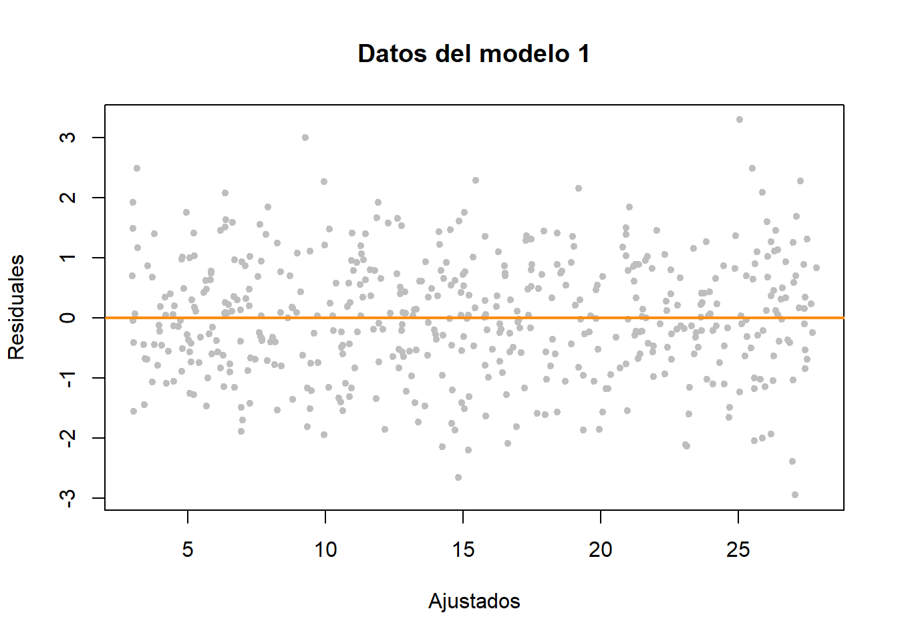
Deberíamos buscar dos cosas en este gráfico.
- En cualquier valor ajustado, la media de los residuos debe ser aproximadamente 0. Si este es el caso, el supuesto de linealidad es válido. Por esta razón, generalmente agregamos una línea horizontal en \(y=0\) para enfatizar este punto.
- En cada valor ajustado, la dispersión de los residuos debe ser aproximadamente la misma. Si este es el caso, el supuesto de varianza constante es válido.
Aquí vemos que este es el caso.
Para tener una mejor idea de cómo un gráfico de ajustados versus residuales puede ser útil, simularemos a partir de modelos con supuestos violados.
El modelo 2 es un ejemplo de varianza no constante. En este caso, la varianza es mayor para valores mayores de la variable predictora \(x\).
set.seed(42)
sim_data_2 = sim_2()
fit_2 = lm(y ~ x, data = sim_data_2)
plot(y ~ x, data = sim_data_2, col = "grey", pch = 20,
main = "Datos del modelo 2")
abline(fit_2, col = "darkorange", lwd = 3)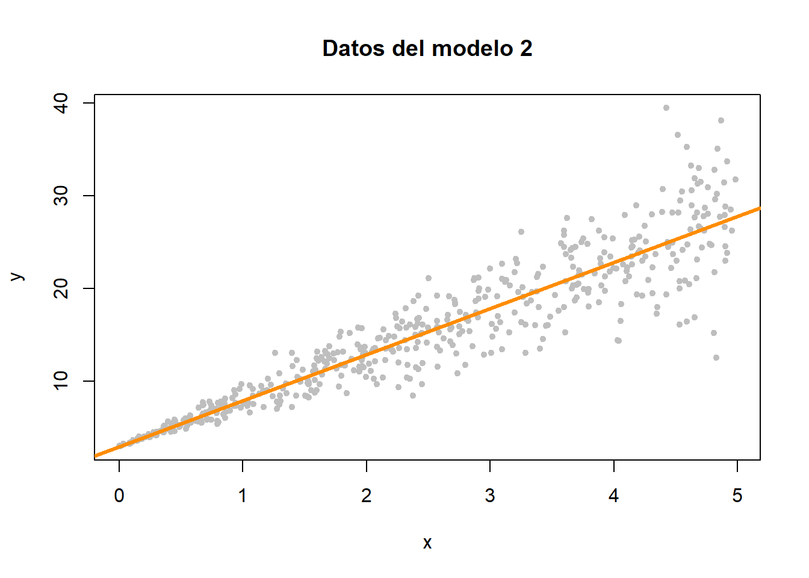
En realidad, esto es bastante fácil de ver agregando la línea ajustada a un gráfico de dispersión. Esto se debe a que solo estamos realizando una regresión lineal simple. Con la regresión múltiple, una gráfica de ajustados versus residuales es una necesidad, ya que agregar una regresión ajustada a una gráfica de dispersión no es exactamente posible.
plot(fitted(fit_2), resid(fit_2), col = "grey", pch = 20,
xlab = "Ajustados", ylab = "Residuales", main = "Datos del modelo 2")
abline(h = 0, col = "darkorange", lwd = 2)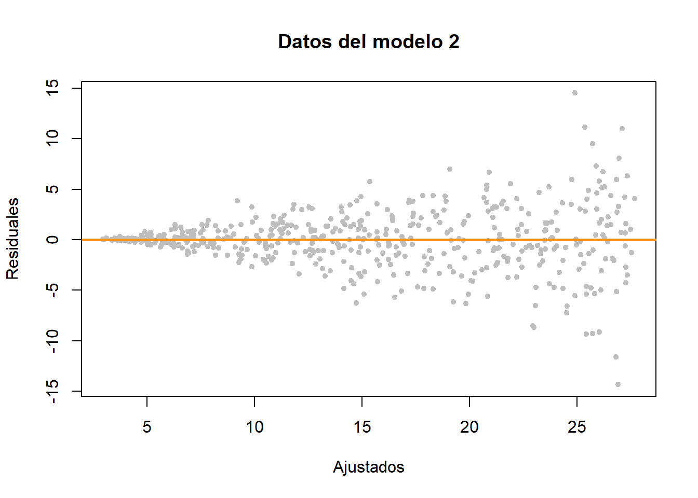
En la gráfica de ajustados versus residuales, vemos dos cosas claramente. Para cualquier valor ajustado, los residuos parecen centrados aproximadamente en 0. ¡Esto es bueno! No se viola el supuesto de linealidad. Sin embargo, también vemos claramente que para valores ajustados más grandes, la dispersión de los residuos es mayor. ¡Esto es malo! Aquí se viola el supuesto de varianza constante.
Ahora mostraremos un modelo que no cumple con el supuesto de linealidad. El modelo 3 es un ejemplo de un modelo en el que \(Y\) no es una combinación lineal de los predictores. En este caso, el predictor es \(x\), pero el modelo usa \(x^2\). (Veremos más adelante que esto es algo con lo que puede lidiar un modelo “lineal”. La solución es simple, ¡simplemente haga que \(x^2\) sea un predictor!)
set.seed(42)
sim_data_3 = sim_3()
fit_3 = lm(y ~ x, data = sim_data_3)
plot(y ~ x, data = sim_data_3, col = "grey", pch = 20,
main = "Datos del modelo 3")
abline(fit_3, col = "darkorange", lwd = 3)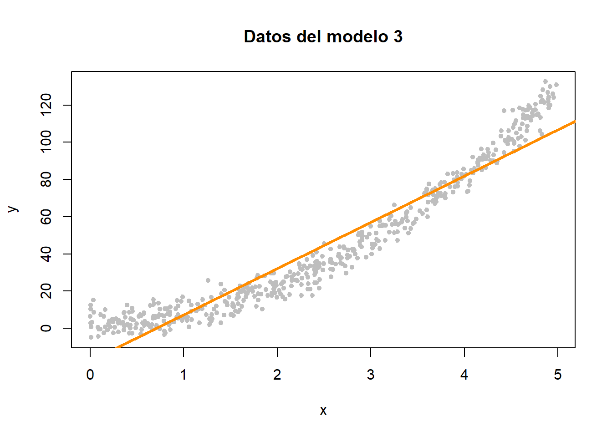
Una vez más, esto es bastante claro en el gráfico de dispersión, pero de nuevo, no podríamos comprobar este gráfico para la regresión múltiple.
plot(fitted(fit_3), resid(fit_3), col = "grey", pch = 20,
xlab = "Ajustados", ylab = "Residuales", main = "Datos del modelo 3")
abline(h = 0, col = "darkorange", lwd = 2)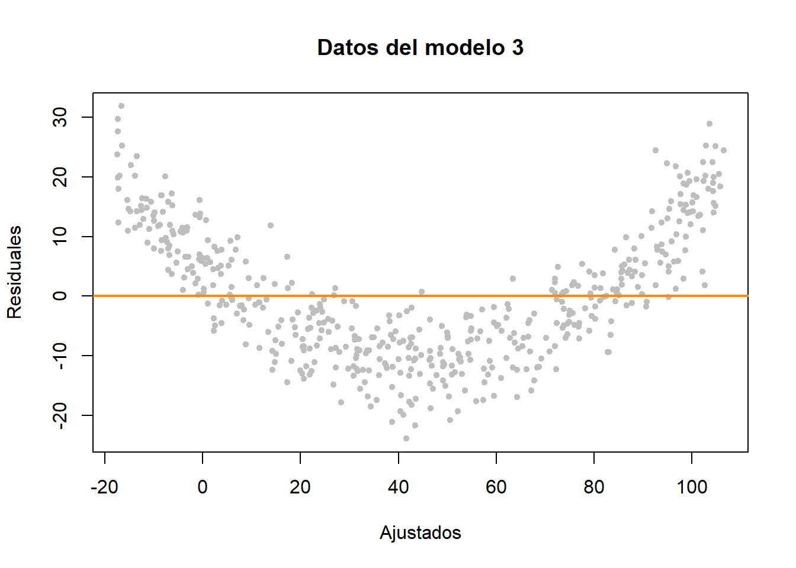
Esta vez en la gráfica de ajustados versus residuales, para cualquier valor ajustado, la dispersión de los residuales es aproximadamente la misma. Sin embargo, ¡ni siquiera están cerca de centrarse en cero! En valores ajustados pequeños y grandes, el modelo se subestima, mientras que en valores ajustados medianos, el modelo se sobreestima. Estos son errores sistemáticos, no ruido aleatorio. Entonces se cumple el supuesto de varianza constante, pero se viola el supuesto de linealidad. La forma de nuestro modelo es simplemente incorrecta. ¡Estamos tratando de ajustar una línea a una curva!
18.2.2 Prueba de Breusch-Pagan
La varianza constante a menudo se denomina homocedasticidad. Por el contrario, la varianza no constante se denomina heterocedasticidad. Hemos visto cómo podemos usar una gráfica de ajustados versus residuales para buscar estos atributos.
Si bien una gráfica de ajustados versus residuales puede darnos una idea sobre la homocedasticidad, a veces preferiríamos una prueba más formal. Hay muchas pruebas de varianza constante, pero aquí presentaremos una, la ** Prueba Breusch-Pagan **. Los detalles exactos de la prueba se omitirán aquí, pero lo que es más importante, se puede considerar que la nula y la alternativa son,
- \(H_0\): Homoscedasticidad. Los errores tienen una variación constante con respecto al modelo real.
- \(H_1\): Heteroscedasticidad. Los errores tienen una varianza no constante con respecto al modelo real.
¿No es eso conveniente? Una prueba que probará específicamente el supuesto de varianza constante.
La prueba Breusch-Pagan no se puede realizar de forma predeterminada en R, sin embargo, la función bptest en el paquete lmtest implementa la prueba.
#install.packages("lmtest")
library(lmtest)Probémoslo en los tres modelos que ajustamos arriba. Recordar,
fit_1no ha violado los supuestos,fit_2violó el supuesto de varianza constante, pero no linealidad,fit_3violó linealidad, pero no varianza constante.
bptest(fit_1)##
## studentized Breusch-Pagan test
##
## data: fit_1
## BP = 1.0234, df = 1, p-value = 0.3117Para fit_1 vemos un valor p grande, por lo que no rechazamos la hipótesis nula de homocedasticidad, que es lo que esperaríamos.
bptest(fit_2)##
## studentized Breusch-Pagan test
##
## data: fit_2
## BP = 76.693, df = 1, p-value < 2.2e-16Para fit_2 vemos un valor p pequeño, por lo que rechazamos la hipótesis nula de homocedasticidad. Se viola el supuesto de varianza constante. Esto coincide con nuestros hallazgos en la gráfica de ajustados versus residuales.
bptest(fit_3)##
## studentized Breusch-Pagan test
##
## data: fit_3
## BP = 0.33466, df = 1, p-value = 0.5629Por último, para fit_3 nuevamente vemos un valor p grande, por lo que no rechazamos la hipótesis nula de homocedasticidad, que coincide con nuestros hallazgos en la gráfica de ajustados versus residuales.
18.2.3 Histogramas
Disponemos de una serie de herramientas para evaluar el supuesto de normalidad. Lo más obvio sería hacer un histograma de los residuos. Si parece más o menos normal, creeremos que los errores podrían ser realmente normales.
par(mfrow = c(1, 3))
hist(resid(fit_1),
xlab = "Residuales",
main = "Histograma de residuos, fit_1",
col = "darkorange",
border = "dodgerblue",
breaks = 20)
hist(resid(fit_2),
xlab = "Residuales",
main = "Histograma de residuos, fit_2",
col = "darkorange",
border = "dodgerblue",
breaks = 20)
hist(resid(fit_3),
xlab = "Residuales",
main = "Histograma de residuos, fit_3",
col = "darkorange",
border = "dodgerblue",
breaks = 20)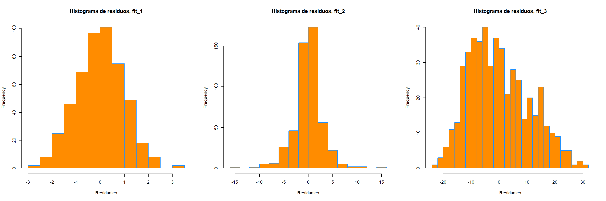
Arriba están los histogramas para cada una de las tres regresiones que hemos estado considerando. Observe que el primero, para fit_1, parece muy normal. El tercero, para fit_3, parece ser muy anormal. Sin embargo, fit_2 no es tan claro. Tiene una forma de campana rugosa, sin embargo, también tiene un pico muy afilado. Por esta razón usualmente usaremos herramientas más poderosas como gráficos Q-Q y la prueba de Shapiro-Wilk para evaluar la normalidad de los errores.
18.2.4 Gráficos Q-Q
Otro método visual para evaluar la normalidad de los errores, que es más poderoso que un histograma, es un gráfico cuantil-cuantílico normal, o gráfico Q-Q para abreviar.
En R estos son muy fáciles de hacer. La función qqnorm() traza los puntos, y la función qqline() agrega la línea necesaria. Creamos un gráfico Q-Q para los residuos de fit_1 para verificar si los errores realmente se pueden distribuir normalmente.
qqnorm(resid(fit_1), main = "Normal Q-Q Plot, fit_1", col = "darkgrey")
qqline(resid(fit_1), col = "dodgerblue", lwd = 2)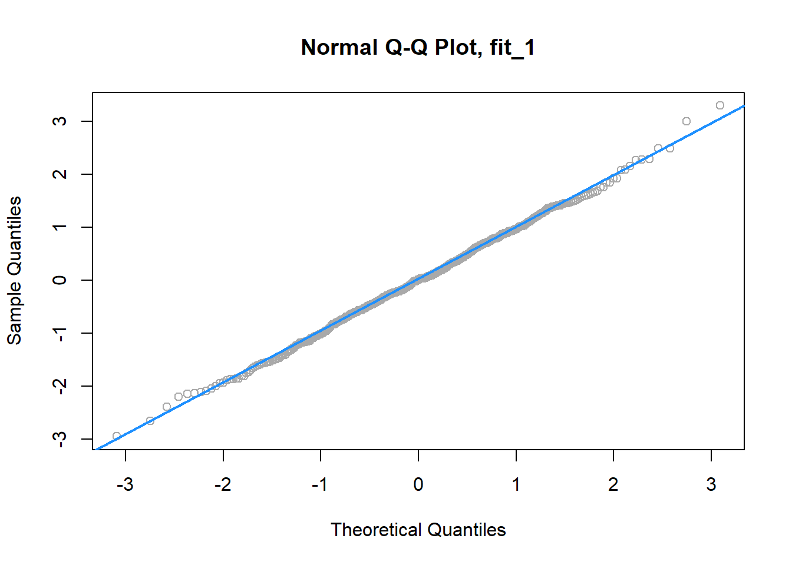
En resumen, si los puntos de la gráfica no siguen de cerca una línea recta, esto sugeriría que los datos no provienen de una distribución normal.
Los cálculos necesarios para crear el gráfico varían según la implementación, pero esencialmente el eje \(y\) son los datos ordenados (cuantiles observados o de muestra), y el eje \(x\) son los valores que esperaríamos si los datos procedieran de una distribución normal (cuantiles teóricos).
La página de Wikipedia para gráficos de probabilidad normal brinda detalles sobre cómo se implementa esto en R si está interesado.
Además, para tener una mejor idea de cómo funcionan los gráficos Q-Q, aquí hay una función rápida que crea un gráfico Q-Q:
qq_plot = function(e) {
n = length(e)
normal_quantiles = qnorm(((1:n - 0.5) / n))
# normal_quantiles = qnorm(((1:n) / (n + 1)))
# graficar cuantiles teóricos vs observados
plot(normal_quantiles, sort(e),
xlab = c("Cuantiles teóricos"),
ylab = c("Cuantiles de muestra"),
col = "darkgrey")
title("Normal Q-Q Plot")
# calcular la línea a través del primer y tercer cuartil
slope = (quantile(e, 0.75) - quantile(e, 0.25)) / (qnorm(0.75) - qnorm(0.25))
intercept = quantile(e, 0.25) - slope * qnorm(0.25)
# agregar al gráfico existente
abline(intercept, slope, lty = 2, lwd = 2, col = "dodgerblue")
}Entonces podemos verificar que es esencialmente equivalente a usar qqnorm() y qqline() en R.
set.seed(420)
x = rnorm(100, mean = 0 , sd = 1)
par(mfrow = c(1, 2))
qqnorm(x, col = "darkgrey")
qqline(x, lty = 2, lwd = 2, col = "dodgerblue")
qq_plot(x)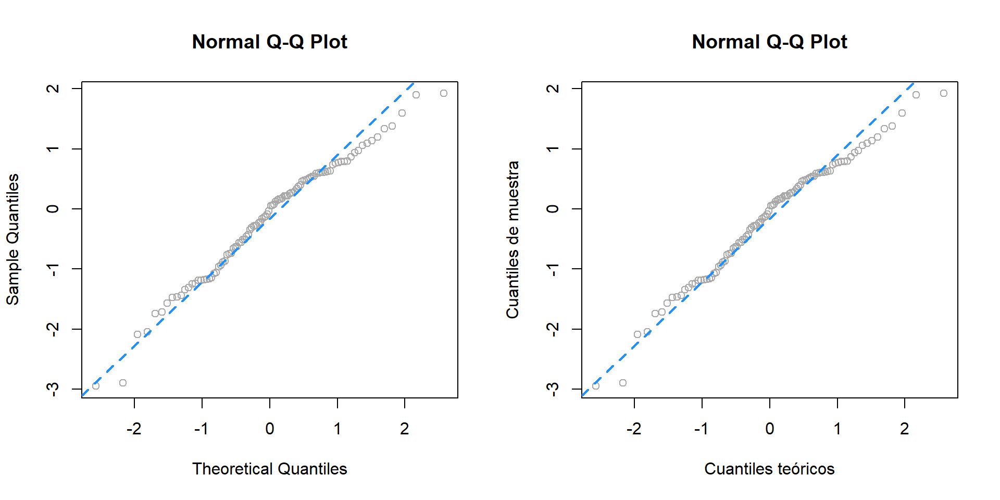
Para tener una mejor idea de lo que significa “cerca de la línea”, realizamos una serie de simulaciones y creamos gráficos Q-Q.
Primero, simulamos datos de una distribución normal con diferentes tamaños de muestra, y cada vez creamos una gráfica Q-Q.
par(mfrow = c(1, 3))
set.seed(420)
qq_plot(rnorm(10))
qq_plot(rnorm(25))
qq_plot(rnorm(100))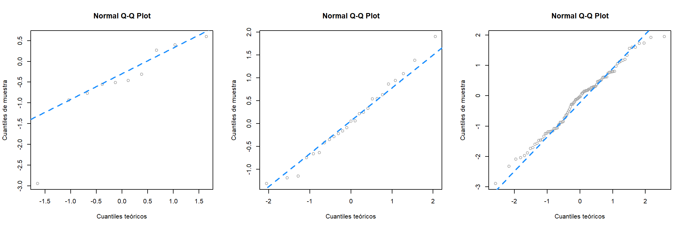
Dado que estos datos son muestreados a partir de una distribución normal, todos estos son, por definición, buenos gráficos Q-Q. Los puntos están “cerca de la línea” y concluiríamos que estos datos podrían haber sido muestreados a partir de una distribución normal. Observe que en la primera gráfica, un punto está algo lejos de la línea, pero solo un punto, en combinación con el tamaño pequeño de la muestra, no es suficiente para preocuparnos. Vemos que con el gran tamaño de la muestra, todos los puntos están bastante cerca de la línea.
A continuación, simulamos datos de una distribución \(t\) con pequeños grados de libertad, para diferentes tamaños de muestra.
par(mfrow = c(1, 3))
set.seed(420)
qq_plot(rt(10, df = 4))
qq_plot(rt(25, df = 4))
qq_plot(rt(100, df = 4))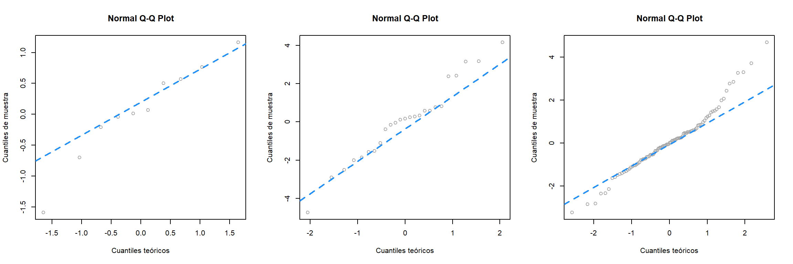
Recuerde que a medida que los grados de libertad para una distribución \(t\) aumentan, la distribución se vuelve cada vez más similar a una normal. Aquí, usando 4 grados de libertad, tenemos una distribución que es algo normal, es simétrica y tiene forma de campana, sin embargo tiene “colas gruesas”. Esto se presenta claramente en el tercer panel. Si bien muchos de los puntos están cerca de la línea, en los bordes existen grandes discrepancias. Esto indica que los valores son demasiado pequeños (negativos) o demasiado grandes (positivos) en comparación con lo que esperaríamos para una distribución normal. Entonces, para el tamaño de muestra de 100, concluiríamos que se viola el supuesto de normalidad. (Si estos fueran residuos de un modelo). Para tamaños de muestra de 10 y 25 podemos sospechar, pero no del todo seguros. Leer gráficos Q-Q es un arte, no completamente una ciencia.
A continuación, simulamos datos de una distribución exponencial.
par(mfrow = c(1, 3))
set.seed(420)
qq_plot(rexp(10))
qq_plot(rexp(25))
qq_plot(rexp(100))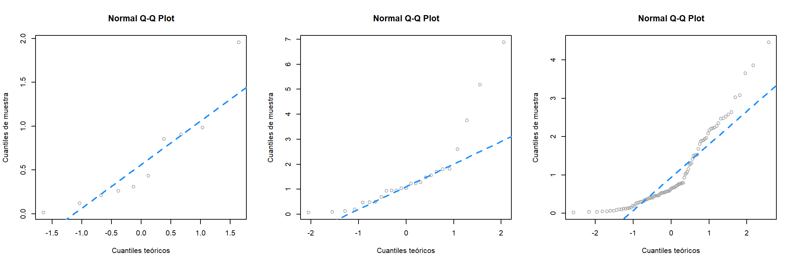
Esta es una distribución que no es muy similar a una normal, por lo que en los tres casos vemos puntos que están lejos de las líneas, por lo que pensaríamos que se viola el supuesto de normalidad.
Para comprender mejor qué gráficas Q-Q son “buenas”, repita las simulaciones anteriores varias veces (sin establecer la semilla) y preste atención a las diferencias entre las que se simulan de la normal y las que no. También considere diferentes tamaños de muestras y parámetros de distribución.
Volviendo a nuestras tres regresiones, recuerde:
fit_1no ha violado los supuestos,fit_2violó el supuesto de varianza constante, pero no linealidad,fit_3violó linealidad, pero no varianza constante.
Ahora crearemos un gráfico Q-Q para cada uno con el objetivo de evaluar la normalidad de los errores.
qqnorm(resid(fit_1), main = "Normal Q-Q Plot, fit_1", col = "darkgrey")
qqline(resid(fit_1), col = "dodgerblue", lwd = 2)Para fit_1, tenemos una gráfica Q-Q casi perfecta. Creemos que los errores siguen una distribución normal.
qqnorm(resid(fit_2), main = "Normal Q-Q Plot, fit_2", col = "darkgrey")
qqline(resid(fit_2), col = "dodgerblue", lwd = 2)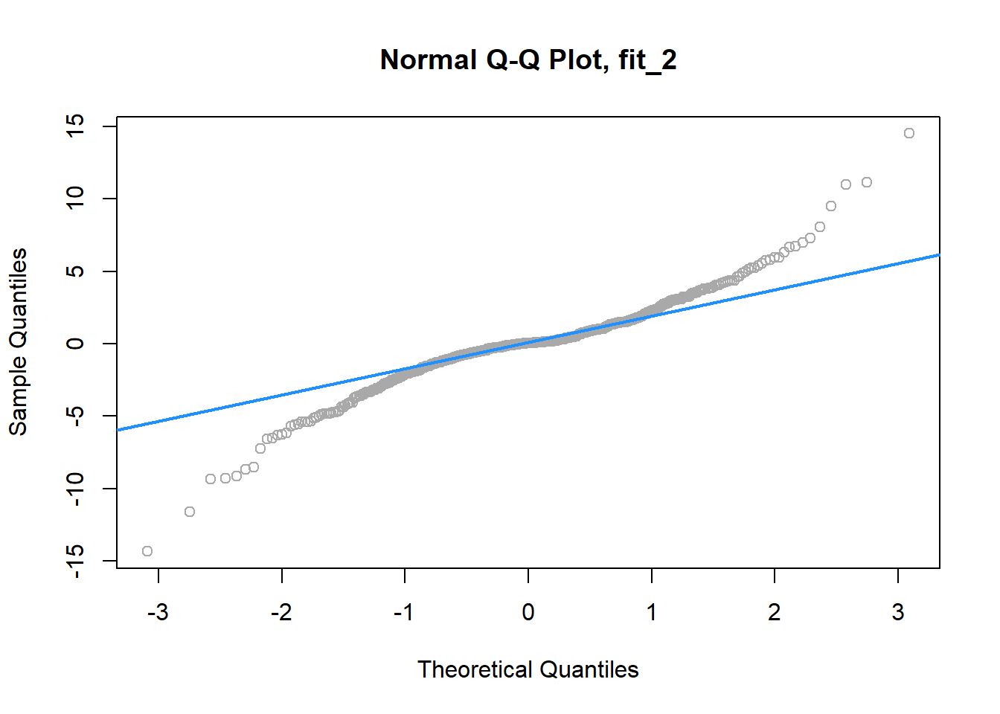
Para fit_2, tenemos una gráfica Q-Q sospechosa. Probablemente no creeríamos que los errores siguen una distribución normal.
qqnorm(resid(fit_3), main = "Normal Q-Q Plot, fit_3", col = "darkgrey")
qqline(resid(fit_3), col = "dodgerblue", lwd = 2)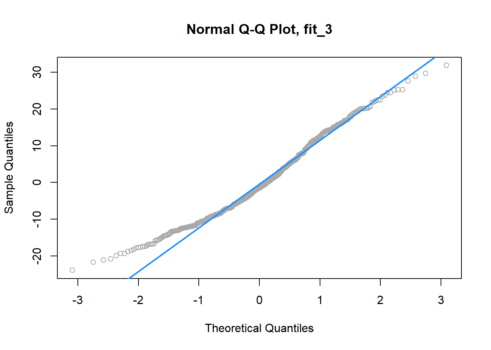
Por último, para fit_3, nuevamente tenemos una gráfica Q-Q sospechosa. Probablemente no creeríamos que los errores siguen una distribución normal.
18.2.5 Prueba de Shapiro-Wilk
Los histogramas y los gráficos Q-Q brindan una buena representación visual de la distribución de los residuos; sin embargo, si estamos interesados en las pruebas formales, hay varias opciones disponibles. Una prueba de uso común es la prueba de Shapiro-Wilk, que se implementa en R.
set.seed(42)
shapiro.test(rnorm(25))##
## Shapiro-Wilk normality test
##
## data: rnorm(25)
## W = 0.9499, p-value = 0.2495shapiro.test(rexp(25))##
## Shapiro-Wilk normality test
##
## data: rexp(25)
## W = 0.71164, p-value = 1.05e-05Esto nos da el valor del estadístico de prueba y su valor p. La hipótesis nula asume que los datos fueron muestreados a partir de una distribución normal, por lo que un valor p pequeño indica que creemos que hay solo una pequeña probabilidad de que los datos pudieran haber sido muestreados a partir de una distribución normal.
Para obtener más detalles, consulte: Wikipedia: Shapiro–Wilk test.
En los ejemplos anteriores, vemos que no rechazamos los datos muestreados de la normal y rechazamos los datos no normales, para cualquier \(\alpha\) razonable.
Volviendo de nuevo a fit_1, fit_2 y fit_3, vemos el resultado de ejecutar shapiro.test() en los residuos de cada uno, devuelve un resultado para cada uno que coincide con las decisiones basadas en los gráficos Q-Q.
shapiro.test(resid(fit_1))##
## Shapiro-Wilk normality test
##
## data: resid(fit_1)
## W = 0.99858, p-value = 0.9622shapiro.test(resid(fit_2))##
## Shapiro-Wilk normality test
##
## data: resid(fit_2)
## W = 0.93697, p-value = 1.056e-13shapiro.test(resid(fit_3))##
## Shapiro-Wilk normality test
##
## data: resid(fit_3)
## W = 0.97643, p-value = 3.231e-0718.3 Observaciones inusuales
Además de verificar los supuestos de regresión, también buscamos cualquier “observación inusual” en los datos. A menudo, una pequeña cantidad de puntos de datos puede tener una influencia extremadamente grande en una regresión, a veces tanto que los supuestos de la regresión se violan como resultado de estos puntos.
Los siguientes tres gráficos están inspirados en un ejemplo de Modelos lineales con R.
par(mfrow = c(1, 3))
set.seed(42)
ex_data = data.frame(x = 1:10,
y = 10:1 + rnorm(n = 10))
ex_model = lm(y ~ x, data = ex_data)
# apalancamiento bajo, residual grande, Influencia pequeña
point_1 = c(5.4, 11)
ex_data_1 = rbind(ex_data, point_1)
model_1 = lm(y ~ x, data = ex_data_1)
plot(y ~ x, data = ex_data_1, cex = 2, pch = 20, col = "grey",
main = "Apalancamiento bajo, Residual grande, Influencia pequeña")
points(x = point_1[1], y = point_1[2], pch = 1, cex = 4, col = "black", lwd = 2)
abline(ex_model, col = "dodgerblue", lwd = 2)
abline(model_1, lty = 2, col = "darkorange", lwd = 2)
legend("bottomleft", c("Original Data", "Added Point"),
lty = c(1, 2), col = c("dodgerblue", "darkorange"))
# Apalancamiento alto, Residual Pequeño, Pequeña influencia
point_2 = c(18, -5.7)
ex_data_2 = rbind(ex_data, point_2)
model_2 = lm(y ~ x, data = ex_data_2)
plot(y ~ x, data = ex_data_2, cex = 2, pch = 20, col = "grey",
main = "Apalancamiento alto, Residual Pequeño, Influencia pequeña")
points(x = point_2[1], y = point_2[2], pch = 1, cex = 4, col = "black", lwd = 2)
abline(ex_model, col = "dodgerblue", lwd = 2)
abline(model_2, lty = 2, col = "darkorange", lwd = 2)
legend("bottomleft", c("Original Data", "Added Point"),
lty = c(1, 2), col = c("dodgerblue", "darkorange"))
# Apalancamiento alto, residual grande, Gran influencia
point_3 = c(14, 5.1)
ex_data_3 = rbind(ex_data, point_3)
model_3 = lm(y ~ x, data = ex_data_3)
plot(y ~ x, data = ex_data_3, cex = 2, pch = 20, col = "grey", ylim = c(-3, 12),
main = "Apalancamiento alto, Residual grande, Gran influencia")
points(x = point_3[1], y = point_3[2], pch = 1, cex = 4, col = "black", lwd = 2)
abline(ex_model, col = "dodgerblue", lwd = 2)
abline(model_3, lty = 2, col = "darkorange", lwd = 2)
legend("bottomleft", c("Original Data", "Added Point"),
lty = c(1, 2), col = c("dodgerblue", "darkorange"))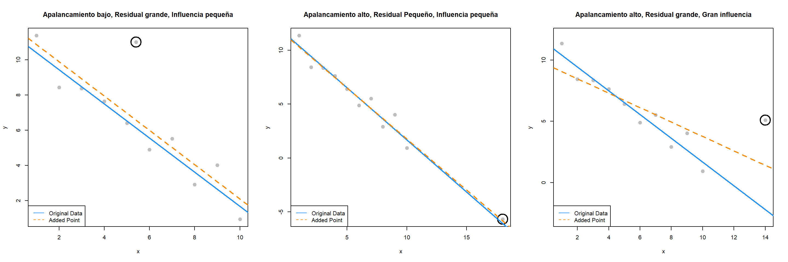
La línea sólida azul en cada gráfico es un ajuste de regresión a los 10 puntos de datos originales almacenados en ex_data. La línea discontinua naranja en cada gráfico es el resultado de agregar un solo punto a los datos originales en ex_data. Este punto adicional está indicado por el punto encerrado en un círculo.
La pendiente de la regresión para los diez puntos originales, la línea azul sólida, viene dada por:
coef(ex_model)[2]## x
## -0.9696033El punto agregado en la primera gráfica tiene un efecto pequeño en la pendiente, que se convierte en:
coef(model_1)[2]## x
## -0.9749534Diremos que este punto tiene un apalancamiento bajo, es un valor atípico debido a su gran residual, pero tiene poca influencia.
El punto agregado en la segunda gráfica también tiene un efecto pequeño en la pendiente, que es:
coef(model_2)[2]## x
## -0.9507397Diremos que este punto tiene un apalancamiento alto, no es un valor atípico debido a su pequeño residuo y tiene una influencia muy pequeña.
Por último, el punto agregado en la tercera gráfica tiene un efecto grande en la pendiente, que ahora es:
coef(model_3)[2]## x
## -0.5892241Este punto agregado es influyente. tiene un alto apalancamiento y es un valor atípico debido a su gran residual.
Ahora hemos mencionado tres nuevos conceptos: apalancamiento, valores atípicos y puntos influyentes, cada uno de los cuales discutiremos en detalle.
18.3.1 Apalancamiento
Un punto de datos con apalancamiento alto, es un punto de datos que podría tener una gran influencia al ajustar el modelo.
Recordemos que,
\[ \hat{\beta} = \left(X^\top X \right)^{-1} X^\top y. \]
Por lo tanto,
\[ \hat{y} = X \hat{\beta} = X \left(X^\top X \right)^{-1} X^\top y \]
Ahora definimos,
\[ H = X \left(X^\top X\right)^{-1} X^\top \]
a la que nos referiremos como hat matrix. La matriz sombrero se utiliza para proyectar en el subespacio que se extiende por las columnas de \(X\). También se conoce simplemente como matriz de proyección.
La matriz sombrero es una matriz que toma los valores originales de \(y\) y agrega un sombrero.
\[ \hat{y} = H y \]
Los elementos diagonales de esta matriz se denominan apalancamiento
\[ H_{ii} = h_i, \]
donde \(h_i\) es el apalancamiento para la observación \(i\) ésima.
Los valores grandes de \(h_i\) indican valores extremos en \(X\), que pueden influir en la regresión. Tenga en cuenta que los apalancamientos solo dependen de \(X\).
Aquí, \(p\) el número de \(\beta\) también es el trazo (y rango) de la matriz sombrero.
\[ \sum_{i = 1}^n h_i = p \]
¿Cuál es el valor de \(h_i\) que se consideraría grande? No hay una respuesta exacta a esta pregunta. Una heurística común sería comparar cada apalancamiento con dos veces el apalancamiento promedio. Un apalancamiento mayor que esto se considera una observación a tener en cuenta. Es decir, si
\[ h_i > 2 \bar{h} \]
decimos que la observación \(i\) tiene un gran apalancamiento. Aquí,
\[ \bar{h} = \frac{\sum_{i = 1}^n h_i}{n} = \frac{p}{n}. \]
Para la regresión lineal simple, el apalancamiento para cada punto viene dado por
\[ h_i = \frac{1}{n} + \frac{(x_i - \bar{x})^2}{S_{xx}}. \]
Esta expresión debería resultarle familiar. (Piense en la inferencia de SLR). Sugiere que los grandes apalancamientos ocurren cuando los valores de \(x\) están lejos de su media. Recuerde que la regresión pasa por el punto \((\bar{x}, \bar{y})\).
Hay varias formas de encontrar apalancamientos en R.
lev_ex = data.frame(
x1 = c(0, 11, 11, 7, 4, 10, 5, 8),
x2 = c(1, 5, 4, 3, 1, 4, 4, 2),
y = c(11, 15, 13, 14, 0, 19, 16, 8))
plot(x2 ~ x1, data = lev_ex, cex = 2)
points(7, 3, pch = 20, col = "red", cex = 2)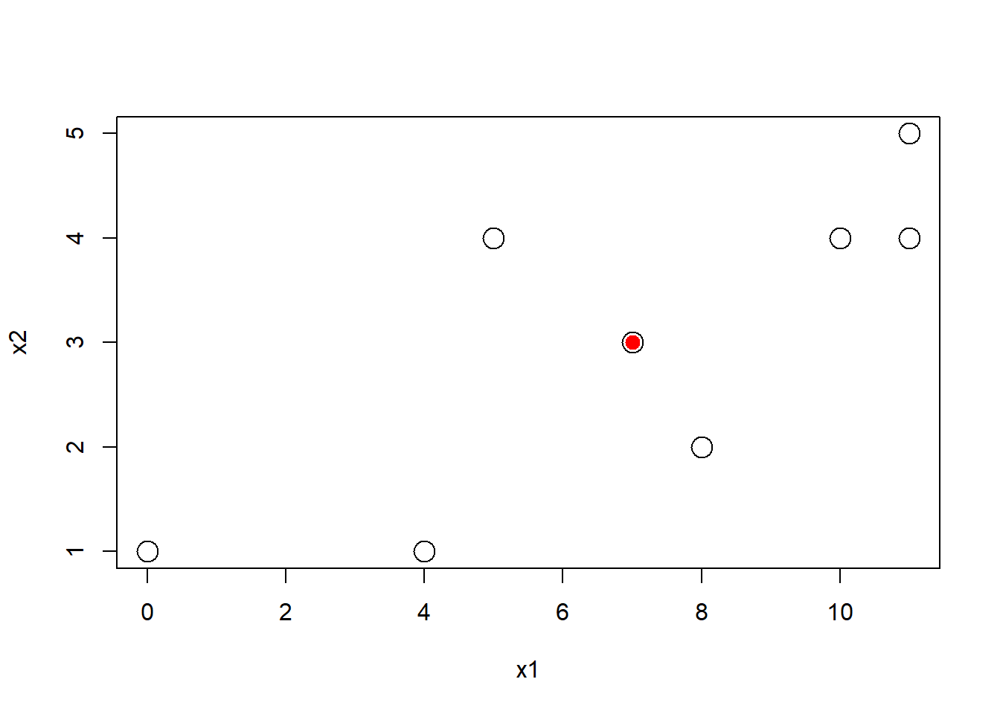
Aquí hemos creado algunos datos multivariados. Observe que hemos trazado los valores de \(x\), no los valores de \(y\). El punto rojo es \((7,3)\) que es la media de x1 y la media dex2 respectivamente.
Podríamos calcular los apalancamientos usando las expresiones definidas anteriormente. Primero creamos la matriz \(X\), luego calculamos \(H\) como se define y extraemos los elementos diagonales.
X = cbind(rep(1, 8), lev_ex$x1, lev_ex$x2)
H = X %*% solve(t(X) %*% X) %*% t(X)
diag(H)## [1] 0.6000 0.3750 0.2875 0.1250 0.4000 0.2125 0.5875 0.4125Observe que aquí tenemos dos predictores, por lo que la regresión tendría 3 parámetros \(\beta\), por lo que la suma de los elementos diagonales es 3.
sum(diag(H))## [1] 3Alternativamente, el método que usaremos con más frecuencia es simplemente ajustar una regresión, luego usar la función hatvalues(), que devuelve los apalancamientos.
lev_fit = lm(y ~ ., data = lev_ex)
hatvalues(lev_fit)## 1 2 3 4 5 6 7 8
## 0.6000 0.3750 0.2875 0.1250 0.4000 0.2125 0.5875 0.4125Nuevamente, tenga en cuenta que aquí hemos “usado” los valores \(y\) para ajustar la regresión, pero R aún los ignora al calcular los apalancamientos, ya que los apalancamientos solo dependen de los valores \(x\).
coef(lev_fit)## (Intercept) x1 x2
## 3.7 -0.7 4.4Veamos qué sucede con estos coeficientes cuando modificamos el valor y del punto con el apalancamiento más alto.
which.max(hatvalues(lev_fit))## 1
## 1lev_ex[which.max(hatvalues(lev_fit)),]## x1 x2 y
## 1 0 1 11Vemos que el valor original de y es 11. Crearemos una copia de los datos y modificaremos este punto para que tenga un valor y de20.
lev_ex_1 = lev_ex
lev_ex_1$y[1] = 20
lm(y ~ ., data = lev_ex_1)##
## Call:
## lm(formula = y ~ ., data = lev_ex_1)
##
## Coefficients:
## (Intercept) x1 x2
## 8.875 -1.375 4.625Observe los cambios grandes en los coeficientes. También observe que cada uno de los coeficientes ha cambiado de alguna manera. Tenga en cuenta que el apalancamiento de los puntos no habría cambiado, ya que no hemos modificado ninguno de los valores de \(x\).
Ahora veamos qué sucede con estos coeficientes cuando modificamos el valor y del punto con el apalancamiento más bajo.
which.min(hatvalues(lev_fit))## 4
## 4lev_ex[which.min(hatvalues(lev_fit)),]## x1 x2 y
## 4 7 3 14Vemos que el valor original de y es 14. Nuevamente crearemos una copia de los datos y modificaremos este punto para que tenga un valor y de 30.
lev_ex_2 = lev_ex
lev_ex_2$y[4] = 30
lm(y ~ ., data = lev_ex_2)##
## Call:
## lm(formula = y ~ ., data = lev_ex_2)
##
## Coefficients:
## (Intercept) x1 x2
## 5.7 -0.7 4.4Esta vez, a pesar de un gran cambio en el valor de y, solo hay un pequeño cambio en los coeficientes. Además, ¡solo ha cambiado el intercepto!
mean(lev_ex$x1)## [1] 7mean(lev_ex$x2)## [1] 3lev_ex[4,]## x1 x2 y
## 4 7 3 14Observe que este punto fue la media de ambos predictores.
Volviendo a nuestras tres gráficas, cada una con un punto añadido, podemos calcular los apalancamientos para cada una. Tenga en cuenta que el undécimo punto de datos es el punto agregado.
hatvalues(model_1)## 1 2 3 4 5 6 7
## 0.33534597 0.23860732 0.16610842 0.11784927 0.09382988 0.09405024 0.11851036
## 8 9 10 11
## 0.16721022 0.24014985 0.33732922 0.09100926hatvalues(model_2)## 1 2 3 4 5 6 7
## 0.23238866 0.18663968 0.14979757 0.12186235 0.10283401 0.09271255 0.09149798
## 8 9 10 11
## 0.09919028 0.11578947 0.14129555 0.66599190hatvalues(model_3)## 1 2 3 4 5 6 7
## 0.27852761 0.21411043 0.16319018 0.12576687 0.10184049 0.09141104 0.09447853
## 8 9 10 11
## 0.11104294 0.14110429 0.18466258 0.49386503¿Alguno de estos es grande?
hatvalues(model_1) > 2 * mean(hatvalues(model_1))## 1 2 3 4 5 6 7 8 9 10 11
## FALSE FALSE FALSE FALSE FALSE FALSE FALSE FALSE FALSE FALSE FALSEhatvalues(model_2) > 2 * mean(hatvalues(model_2))## 1 2 3 4 5 6 7 8 9 10 11
## FALSE FALSE FALSE FALSE FALSE FALSE FALSE FALSE FALSE FALSE TRUEhatvalues(model_3) > 2 * mean(hatvalues(model_3))## 1 2 3 4 5 6 7 8 9 10 11
## FALSE FALSE FALSE FALSE FALSE FALSE FALSE FALSE FALSE FALSE TRUEVemos que en la segunda y tercer gráfica, el punto agregado es un punto de alto apalancamiento. Recuerde que solo en el tercer gráfico eso influyó en la regresión. Para entender por qué, necesitaremos analizar los valores atípicos.
18.3.2 Valores atípicos
Los valores atípicos son puntos que no se ajustan bien al modelo. Pueden tener o no un gran efecto en él. Para identificar valores atípicos, buscaremos observaciones con residuos grandes.
Ahora,
\[ e = y - \hat{y} = Iy - Hy = (I - H) y \]
Entonces, bajo los supuestos de regresión lineal,
\[ \text{Var}(e_i) = (1 - h_i) \sigma^2 \]
y por lo tanto la estimación de \(\sigma^2\) con \(s_e^2\) es
\[ \text{SE}[e_i] = s_e \sqrt{(1 - h_i)}. \]
Luego podemos mirar el residuo estandarizado para cada observación, \(i = 1, 2, \ldots n\),
\[ r_i = \frac{e_i}{s_e\sqrt{1 - h_i}} \overset{approx}{\sim} N(\mu = 0, \sigma^ 2 = 1) \]
cuando \(n\) es grande.
Podemos utilizar este hecho para identificar residuos “grandes”. Por ejemplo, los residuos estandarizados de magnitud superior a 2 solo deberían ocurrir aproximadamente el 5 por ciento de las veces.
Volviendo nuevamente a nuestras tres gráficas, cada una con un punto agregado, podemos calcular los residuos y los residuos estandarizados para cada una. Los residuos estandarizados se pueden obtener en R usando rstandard() donde normalmente usaríamos resid().
resid(model_1)## 1 2 3 4 5 6 7
## 0.4949887 -1.4657145 -0.5629345 -0.3182468 -0.5718877 -1.1073271 0.4852728
## 8 9 10 11
## -1.1459548 0.9420814 -1.1641029 4.4138254rstandard(model_1)## 1 2 3 4 5 6 7
## 0.3464701 -0.9585470 -0.3517802 -0.1933575 -0.3428264 -0.6638841 0.2949482
## 8 9 10 11
## -0.7165857 0.6167268 -0.8160389 2.6418234rstandard(model_1)[abs(rstandard(model_1)) > 2]## 11
## 2.641823En la primera gráfica, vemos que el undécimo punto, el punto agregado, es un residuo estandarizado grande.
resid(model_2)## 1 2 3 4 5 6
## 1.03288292 -0.95203397 -0.07346766 0.14700626 -0.13084829 -0.69050140
## 7 8 9 10 11
## 0.87788484 -0.77755647 1.28626601 -0.84413207 0.12449986rstandard(model_2)## 1 2 3 4 5 6
## 1.41447023 -1.26655590 -0.09559792 0.18822094 -0.16574677 -0.86977220
## 7 8 9 10 11
## 1.10506546 -0.98294409 1.64121833 -1.09295417 0.25846620rstandard(model_2)[abs(rstandard(model_2)) > 2]## named numeric(0)En la segunda gráfica, vemos que no hay puntos con grandes residuos estandarizados.
resid(model_3)## 1 2 3 4 5 6
## 2.30296166 -0.04347087 0.47357980 0.33253808 -0.30683212 -1.22800087
## 7 8 9 10 11
## -0.02113027 -2.03808722 -0.33578039 -2.82769411 3.69191633rstandard(model_3)## 1 2 3 4 5 6
## 1.41302755 -0.02555591 0.26980722 0.18535382 -0.16873216 -0.67141143
## 7 8 9 10 11
## -0.01157256 -1.12656475 -0.18882474 -1.63206526 2.70453408rstandard(model_3)[abs(rstandard(model_3)) > 2]## 11
## 2.704534En la última gráfica, vemos que el undécimo punto, el punto agregado, es un residuo estandarizado grande.
Recuerde que el punto agregado en las gráficas dos y tres fueron ambos de alto apalancamiento, pero ahora solo el punto en la gráfica tres tiene un gran residuo. Ahora combinaremos esta información y discutiremos la influencia.
18.3.3 Influencia
Como hemos visto en los tres gráficos, algunos valores atípicos solo cambian la regresión en pequeña cantidad (gráfico uno) y algunos valores atípicos tienen un gran efecto en la regresión (gráfico tres). Las observaciones que caen en la última categoría, puntos con (alguna combinación de) alto apalancamiento y gran residual, los llamaremos influyentes.
Una medida común de influencia es la Distancia de Cook, que se define como
\[ D_i = \frac{1}{p}r_i^2\frac{h_i}{1-{h_i}}. \]
Tenga en cuenta que esta es una función tanto del apalancamiento como de los residuales estandarizados.
La distancia Cook a menudo se considera grande si
\[ D_i > \frac{4}{n} \]
y una observación con una distancia de Cook grande se llama influyente. De nuevo, esto es simplemente una heurística y no una regla exacta.
La distancia de Cook para cada punto de una regresión se puede calcular usando cooks.distance() que es una función predeterminada en R. Busquemos puntos influyentes en las tres gráficas que habíamos estado considerando.
Recuerde que los puntos encerrados en un círculo en cada gráfico tienen características diferentes:
- Gráfico Uno: apalancamiento bajo, residuo grande.
- Gráfico Dos: apalancamiento alto, residuo pequeño.
- Gráfico Tres: apalancamiento alto, residuo grande.
Ahora comprobaremos directamente si cada uno de estos es influyente.
cooks.distance(model_1)[11] > 4 / length(cooks.distance(model_1))## 11
## FALSEcooks.distance(model_2)[11] > 4 / length(cooks.distance(model_2))## 11
## FALSEcooks.distance(model_3)[11] > 4 / length(cooks.distance(model_3))## 11
## TRUEY, como se esperaba, ¡el punto agregado en la tercer gráfica, con un alto apalancamiento y un gran residuo, se considera influyente!
18.4 Ejemplos de análisis de datos
18.4.1 Buenos diagnósticos
En el último capítulo ajustamos una regresión aditiva a los datos de mtcars con mpg como respuesta y hp y am como predictores. Realicemos algunos diagnósticos en este modelo.
Primero, ajuste el modelo como hicimos en el capítulo anterior.
mpg_hp_add = lm(mpg ~ hp + am, data = mtcars)plot(fitted(mpg_hp_add), resid(mpg_hp_add), col = "grey", pch = 20,
xlab = "Ajustados", ylab = "Residuales",
main = "mtcars: Ajustados versus Residuales")
abline(h = 0, col = "darkorange", lwd = 2)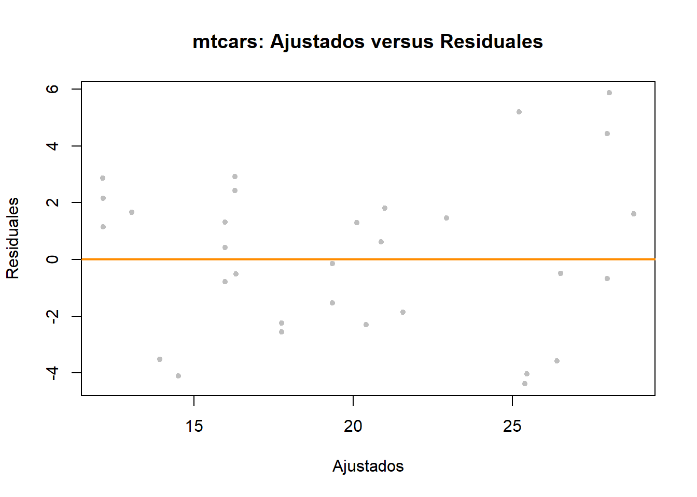
La gráfica de ajustados versus residuales se ve bien. No vemos ningún patrón obvio y la varianza parece aproximadamente constante. (Tal vez un poco más grande para valores ajustados grandes, pero no lo suficiente como para preocuparse).
bptest(mpg_hp_add)##
## studentized Breusch-Pagan test
##
## data: mpg_hp_add
## BP = 7.5858, df = 2, p-value = 0.02253La prueba de Breusch-Pagan verifica esto, al menos para un pequeño valor de \(\alpha\).
qqnorm(resid(mpg_hp_add), col = "darkgrey")
qqline(resid(mpg_hp_add), col = "dodgerblue", lwd = 2)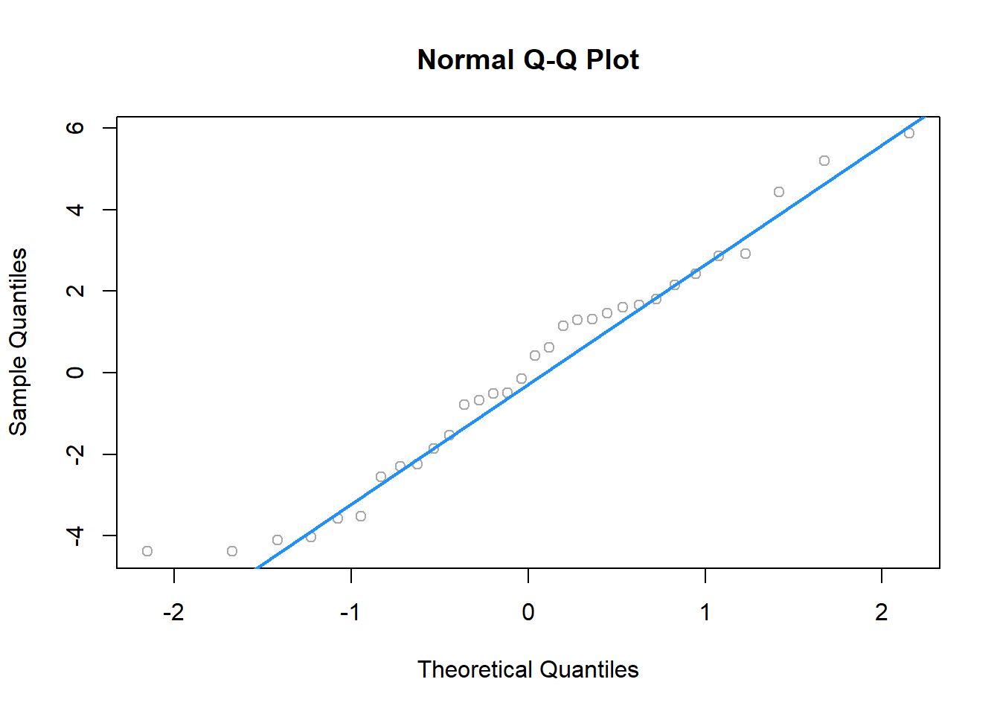
La gráfica Q-Q se ve extremadamente bien y la prueba de Shapiro-Wilk está de acuerdo.
shapiro.test(resid(mpg_hp_add))##
## Shapiro-Wilk normality test
##
## data: resid(mpg_hp_add)
## W = 0.96485, p-value = 0.3706sum(hatvalues(mpg_hp_add) > 2 * mean(hatvalues(mpg_hp_add)))## [1] 2Vemos que hay dos puntos de gran apalancamiento.
sum(abs(rstandard(mpg_hp_add)) > 2)## [1] 1También hay un punto con un gran residuo. ¿Estos resultan en puntos que se consideran influyentes?
cd_mpg_hp_add = cooks.distance(mpg_hp_add)
sum(cd_mpg_hp_add > 4 / length(cd_mpg_hp_add))## [1] 2large_cd_mpg = cd_mpg_hp_add > 4 / length(cd_mpg_hp_add)
cd_mpg_hp_add[large_cd_mpg]## Toyota Corolla Maserati Bora
## 0.1772555 0.3447994Encontramos dos puntos influyentes. Curiosamente, son coches muy diferentes.
coef(mpg_hp_add)## (Intercept) hp am
## 26.5849137 -0.0588878 5.2770853Dado que los diagnósticos se veían bien, no hay mucha necesidad de preocuparse por estos dos puntos, pero veamos cuánto cambian los coeficientes si los eliminamos.
mpg_hp_add_fix = lm(mpg ~ hp + am,
data = mtcars,
subset = cd_mpg_hp_add <= 4 / length(cd_mpg_hp_add))
coef(mpg_hp_add_fix)## (Intercept) hp am
## 27.22190933 -0.06286249 4.29765867Parece que no hay mucho cambio en los coeficientes como resultado de eliminar los supuestos puntos influyentes. Tenga en cuenta que no creamos un nuevo conjunto de datos para lograr esto. En su lugar, usamos el argumento subset para lm(). Piense en lo que hace el código cd_mpg_hp_add <= 4 / length(cd_mpg_hp_add) aquí.
par(mfrow = c(2, 2))
plot(mpg_hp_add)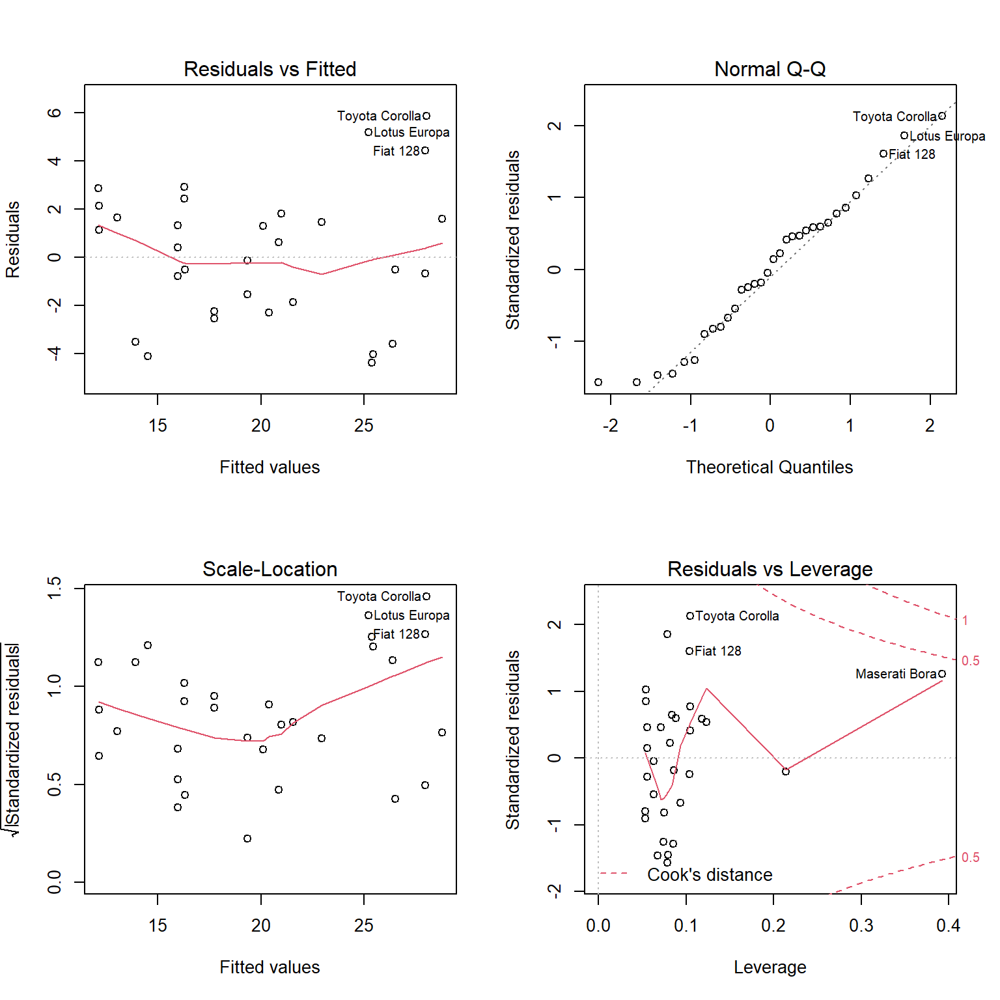
Observe que, al llamar a plot() en una variable que almacena un objeto creado por lm(), se generan cuatro diagramas de diagnóstico por defecto. Utilice ?Plot.lm para obtener más información. Los dos primeros ya deberían resultarle familiares.
18.4.2 Diagnóstico sospechoso
Consideremos el modelo big_model del último capítulo que se ajustó al conjunto de datos autompg. Se usó mpg como respuesta y se consideraron muchos términos de interacción entre los predictores disp, hp y domestic.
str(autompg)## 'data.frame': 383 obs. of 9 variables:
## $ mpg : num 18 15 18 16 17 15 14 14 14 15 ...
## $ cyl : Factor w/ 3 levels "4","6","8": 3 3 3 3 3 3 3 3 3 3 ...
## $ disp : num 307 350 318 304 302 429 454 440 455 390 ...
## $ hp : num 130 165 150 150 140 198 220 215 225 190 ...
## $ wt : num 3504 3693 3436 3433 3449 ...
## $ acc : num 12 11.5 11 12 10.5 10 9 8.5 10 8.5 ...
## $ year : int 70 70 70 70 70 70 70 70 70 70 ...
## $ origin : int 1 1 1 1 1 1 1 1 1 1 ...
## $ domestic: num 1 1 1 1 1 1 1 1 1 1 ...big_model = lm(mpg ~ disp * hp * domestic, data = autompg)qqnorm(resid(big_model), col = "darkgrey")
qqline(resid(big_model), col = "dodgerblue", lwd = 2)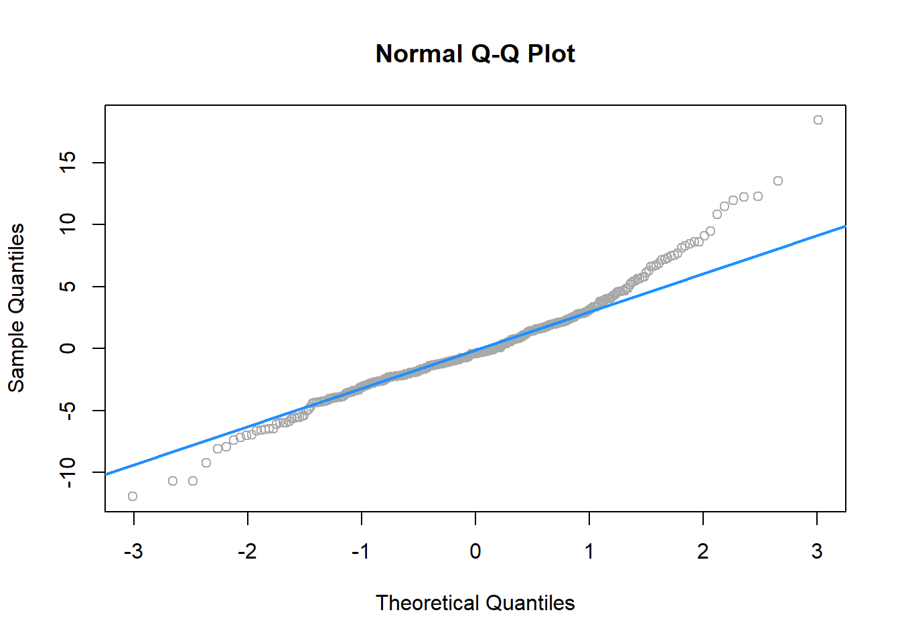
shapiro.test(resid(big_model))##
## Shapiro-Wilk normality test
##
## data: resid(big_model)
## W = 0.96161, p-value = 1.824e-08Aquí, tanto la gráfica Q-Q como la prueba de Shapiro-Wilk sugieren que se viola el supuesto de normalidad.
big_mod_cd = cooks.distance(big_model)
sum(big_mod_cd > 4 / length(big_mod_cd))## [1] 31Aquí, encontramos 31, ¡así que quizás eliminarlos ayude!
big_model_fix = lm(mpg ~ disp * hp * domestic,
data = autompg,
subset = big_mod_cd < 4 / length(big_mod_cd))
qqnorm(resid(big_model_fix), col = "grey")
qqline(resid(big_model_fix), col = "dodgerblue", lwd = 2)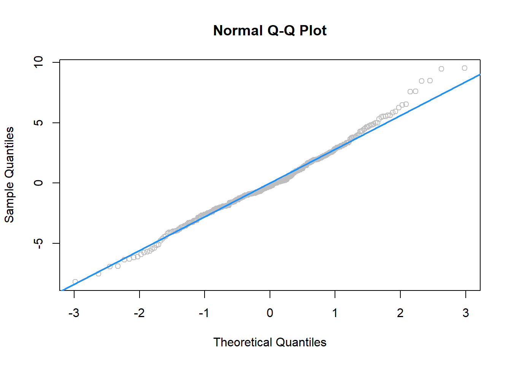
shapiro.test(resid(big_model_fix))##
## Shapiro-Wilk normality test
##
## data: resid(big_model_fix)
## W = 0.99035, p-value = 0.02068Eliminar estos puntos da como resultado una gráfica Q-Q mucho mejor, y ahora Shapiro-Wilk no puede rechazar por un \(\alpha\) bajo.
Ahora hemos visto que, a veces, la modificación de los datos puede solucionar problemas con la regresión. Sin embargo, en el próximo capítulo, en lugar de modificar los datos, modificaremos el modelo mediante transformaciones.